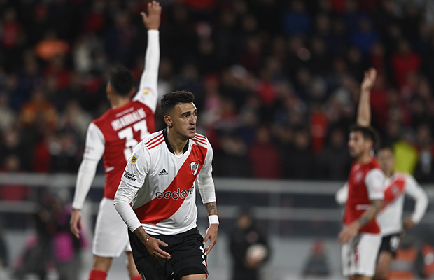

Golazo de Matias Suarez
El equipo de Marcelo Gallardo fue contundente en casa: con dos tantos de Pablo Solari, Javier Pinola y una joya de Matías Suárez, se impuso 4-1 por la 13ª jornada de la Liga Profesional.
Leer más

CARP
El equipo de Marcelo Gallardo fue contundente en casa: con dos tantos de Pablo Solari, Javier Pinola y una joya de Matías Suárez, se impuso 4-1 por la 13ª jornada de la Liga Profesional.
Leer más
El goleador colombiano, quien festejó su primer gol con el manto sagrado en el Mâs Monumental, habló luego del triunfo sobre Central Córdoba de Santiago del Estero.
Leer más
Pinola a sus 39 años sigue resaltando sobre el resto y muestra un gran nivel
Leer más
El entrenador analizó la gran victoria sobre Defensa y Justicia, por la Copa Argentina, y se mostró muy agradecido con el espectacular aliento de los hinchas en Chaco.
Leer más